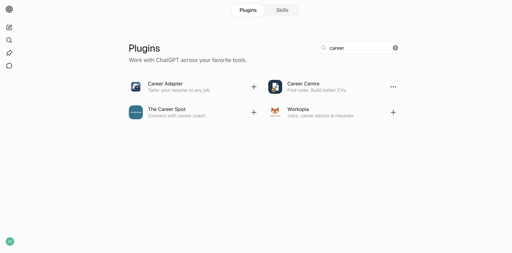
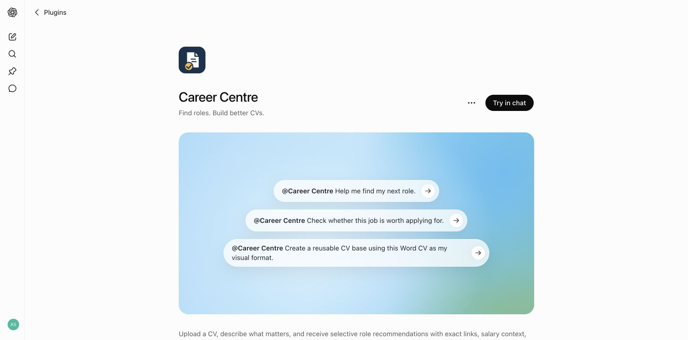
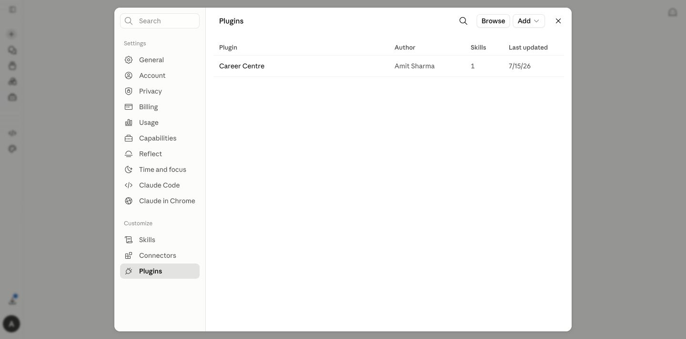
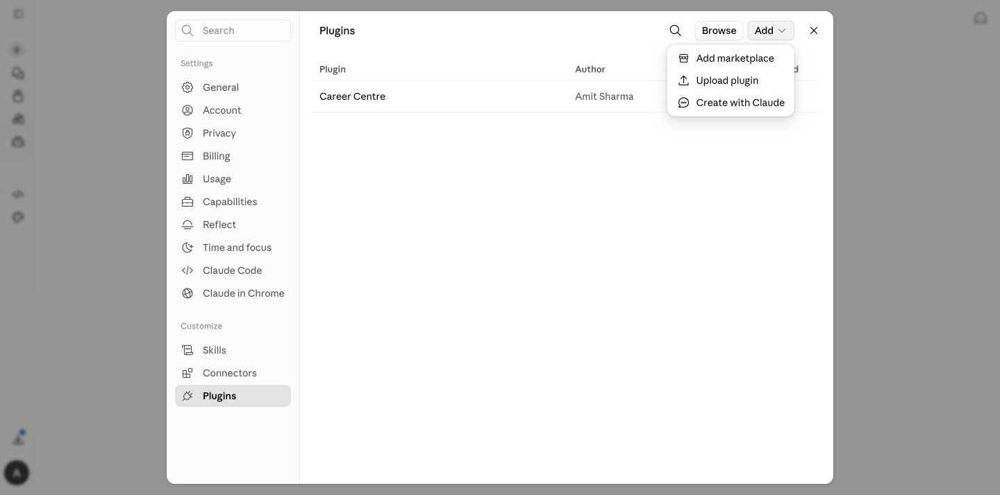

Recommended
Install in ChatGPT
- 1Open Plugins in ChatGPT and search for Career Centre.
- 2Open the result by Amit Sharma and select Install. If it is already installed, you will see Try in chat.
- 3Start a normal Work task and say @Career Centre Help me find my next role.
- 4Share one CV, or the key CVs you use for different directions. Career Centre reviews them before asking for anything missing.


Claude personal plugin
Install in Claude
- 1Download the Claude plugin ZIP below. Do not unzip it.
- 2In Claude, open Customize → Plugins.
- 3Select Add → Upload plugin, choose the ZIP and enable Career Centre.
- 4Start a normal chat, type /career-centre, and share your CV when asked.


Controlled beta downloads
ChatGPT beta.3 skill
For users whose ChatGPT account exposes personal skill upload.
SHA-256: bc9ad68a8384a34fecd89801e15604eabdd7fafe7a438f5ade7705de2756ccf3Claude beta.3 plugin
The same personal plugin used in the steps above.
SHA-256: 511998731e8bea0a67496628830c2ea3f67c8973dc919a387443f077b807327cWhat happens first
The skill reads every supplied CV, gives a broad strength verdict plus a short review of what works and what may be underselling you, asks only for missing decisions that could change the result, and then shows Your Career Centre is ready with the active market, sources, salary, employment and CV assumptions. It also prepares the first portable Career Passport automatically.
Turn a good search into a daily run
Test one search manually first. After the first completed search with a verified role, Career Centre offers to repeat the same calibrated search daily or on weekdays. Nothing is created until you accept and choose a time and timezone. ChatGPT Work can schedule from the existing task; Claude uses Cowork and its /schedule skill. The package itself is not re-uploaded for each run.
Keep your history
Use one main Career Centre conversation for the active search and save the latest Career Passport. If you move to a new conversation in ChatGPT or Claude, upload that Passport with any new CV or evidence so the source-mapped history can continue.
If upload is unavailable
Plugin availability can depend on the user's plan, region, organization controls and current product rollout. Use ChatGPT Work on the web first and check its Plugins area. The downloadable ChatGPT ZIP is for controlled beta or developer installation where personal skill upload is available. Do not create a Project as a workaround.
Directory installation
After public directory review, each provider can offer a simpler catalog route. Users will find Career Centre, select Install and start a normal conversation.
Optional job-source connectors
Career Centre does not require a job-board plugin. It starts with exact employer and authorised-recruiter postings, uses suitable market boards for discovery, and reconciles roles to a canonical posting before recommending Apply.
Where available, Claude users may optionally connect the official Indeed connector after installing Career Centre. No official LinkedIn Jobs or SEEK connector surfaced in the signed-in provider directories during the 14 July 2026 release check. Availability can change; unrelated advertising, social-media or scraping tools are not substitutes for an official jobs connector.
Document safety
Never upload another person's CV or reference document unless you have permission to use it. Reference CVs are treated as visual models only.